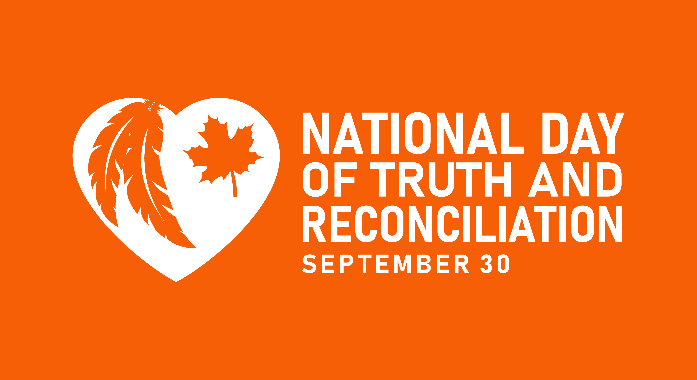

Truth And Reconciliation In The Classroom

Truth and Reconciliation in Education!
Jo Chrona is a well know author and educator from Kitsumkalum First Nation. In her book Wayi Wah! Indigenous Pedagogies An Act for Reconciliation and Anti-Racist Education, Chrona reminds readers, "making mistakes and learning from them so that we can do better next time is integral to understand in our classrooms."
When thinking about reconciliation, Chrona (2022) states, "we are not yet where we need to be, but change is slowly happening in British Columbia. Because of a number of factors, the province is gradually seeing over-all reductions in the disparity in education outcomes between Indigenous and non-Indigenous learners, and the education system is learning to respond to the voices of Indigenous Peoples (Augustine et al., 2018). Importantly, this work is happening in ways that recognize that the system needed to change to better meet the needs of all learners (rather than vice versa).
Wayi Wah! Indigenous Pedagogies An Act for Reconciliation and Anti-Racist Education.
Education for Reconciliation
In June 2015 the Truth and Reconcilation Commission called upon the federal, provincial, and territorial governments, in consultation and collaboration with Survivors, Aboriginal peoples, and educators to, among other things:
Make age-appropriate currculum on residential schools, Treaties, and Aboriginal peoples' historical and contemporary contributions to Canada a mandatory education requirement for Kindergarten to Grade Twelve students.
Provide the necessary funding to post-secondary institutions to educate teachers on how to integrate Indigenous knowledge and teaching methods into classrooms.
Provide the necessary funding to Aboriginal schools to utilize Indigenous knowledge and teaching methods in classrooms.
Establish senior-level positions in government at the assistant deputy minister level or higher dedicated to Aboriginal conent in education.
For a complete list of Truth and Reconcilation Commission Calls to Action for Education, see the
TRC website.

Some things that are happening in British Columbia education since the Calls to Action were created in June 2015:
- In B.C's redesigned curriculum, Indigenous knowledge and perspectives are integrated throughout all areas of learning and are evident in the curriculum's rationale statements, goals, big ideas, mandated learning standards, and elaborations.
- The First Peoples Princples of Learning (FPPL) is the learning philosophy underpinning British Columbia's redesigned curriculum
- The FPPL offers a crucial lens for curriculum, placing a significant importance on the authentic integration of Indigenous knowledge and perspectives in relevant and meaningful ways.
To learn more about how the Government of Canada is responsding to the Truth and Reconciliation Commission's Calls to Action regarding education follow the link to their webpage.
Government of Canada Website.
In The Classroom
- display visuals that acknowledge Indigenous culture
- make connections to local Indigenous communities
- ask students questions around what they know about the local Indigenous communities
- integrate First Peoples Principles of Learning into all areas of teaching
- books in classroom library that depict Indigenous culture and character
- include literature that supports authentic Indigenous voice
First Peoples Classroom Resources
In The School
All educators need to be aware of the Indigenous Education Resources that are part of the British Columbia Curriculum. For an in depth look at what is available, check out BC's Curriular Connections at
BC Curriculum.
- acknowledge the territory on which your school resides
- display local Indigenous art and culture throughout the school
- have a local Edler to support students and staff with Indigenous ways of knowing
Indigenous Reflections Resources
Honuring National Day of Truth and Reconciliation

There are many ways to honour National Truth and Reconciliation Day in the school and in the classroom.
There are many books, for all ages, that can be shared with students, from Kindergarten to grade twelve.
There are many activities to get students involved with, individually, as a class, or as a school.